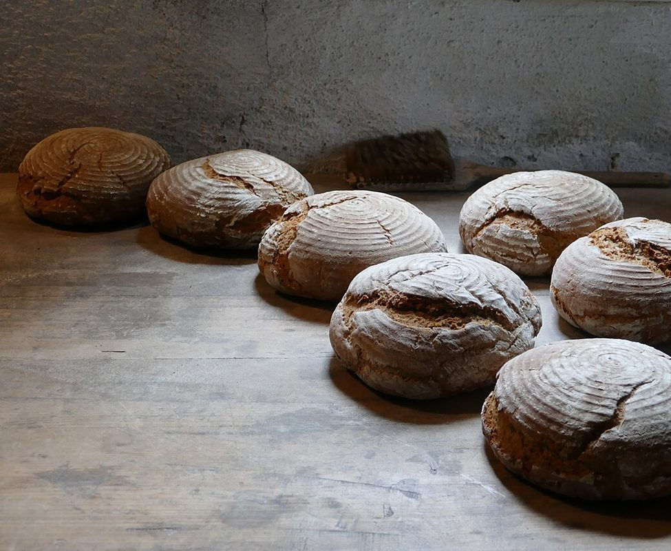
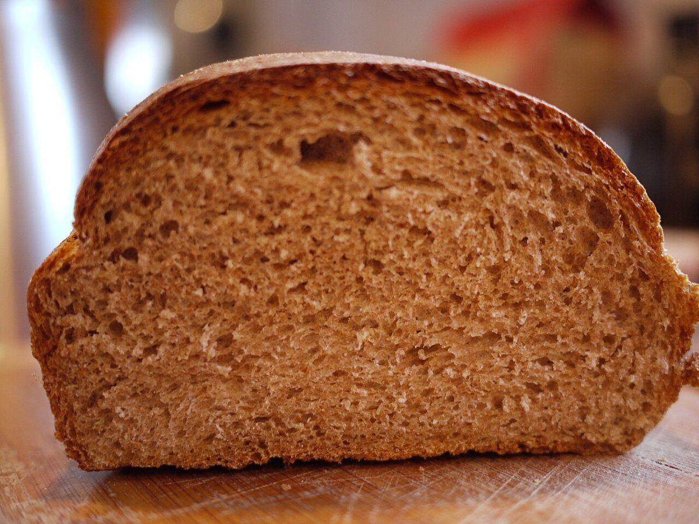

ぽっかぽっか
ベーカリー / 鹿児島県大島郡龍郷町大勝
Pokka Pokka
鹿児島県大島郡龍郷町にある手作りパン屋「大勝の小さな手作りパン屋 Pokka Pokka」のご案内ページです。営業時間やメニューなど、詳しいことは準備中。まずはInstagramをのぞいてみてください。

ポケット1
制作側の連想
「ポケット」から考えた作り
店名の由来は分かりません。制作側は「Pokka Pokka」という響きから、エプロンの前ポケットを連想しました。このサイトは、デニムのエプロンに縫い付けたポケットを5つ並べる作りにしています(5ページ=5つのポケット)。制作側の連想で、お店の理念・由来とは無関係です。
ポケット1
お店のこと(確認できたものだけ)
| 所在地 | 〒894-0105 鹿児島県大島郡龍郷町大勝1271-3 |
|---|---|
| 電話 | 0997-69-4430 |
| 営業時間 | 準備中 |
| 定休日 | 準備中 |
| ご予約 | 準備中 |
| 駐車場 | 準備中 |
| SNS | Instagram @pokkapokkapan |
写真は龍郷町やお店のものではありません。パン作りのイメージを伝えるための、国外・撮影地不明のフリー素材です。


